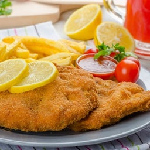

One of the best ways to prepare chicken.
This Chicken Milanese recipe serves up crispy chicken cutlets coated with breadcrumbs,
pan fried until golden brown, nestled on top of fresh arugula with shaved Parmesan.
A super easy and satisfying weeknight dinner option.
Ingredients
- 2 eggs
- salt to taste
- ground black pepper to taste
- ¾ cup all-purpose flour
- 1 cup Italian seasoned bread crumbs
- 2 skinless, boneless chicken breast halves, thinly sliced
- ¼ cup vegetable oil for frying
- 1 lemon, cut into wedges
Steps
- Preheat oven to 200 degrees F (95 degrees C).
- Beat eggs with salt and pepper in a shallow dish.
Spread flour in another dish and bread crumbs in a third dish.
- Working with one piece at a time, gently press chicken into the flour to coat and shake off the excess flour.
Dip into the beaten egg, then press into bread crumbs.
Gently toss between your hands so any bread crumbs that haven't stuck can fall away.
Place the breaded chicken onto a plate while breading the rest; do not stack.
- Heat vegetable oil in a large skillet over medium heat.
Pan-fry chicken in batches of 2 or 3 pieces until golden brown and no longer pink in the center,
about 2 to 4 minutes per side.
Transfer cooked chicken to a baking sheet and keep warm in preheated oven while cooking remaining chicken.
- Serve with lemon wedges.
Return to top
Return to main page